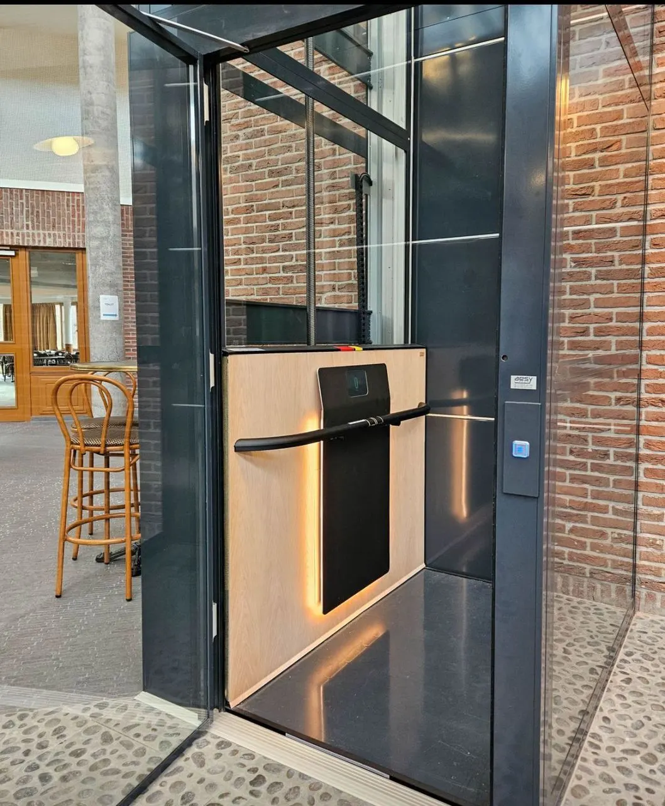

L'hydraulique en pied de gaine : un Home Lift silencieux, sûr et simple à intégrer

Le client n'achète pas un moteur : il achète un ascenseur silencieux, sûr et discret. C'est pour cela que VIP Lift a choisi la technologie hydraulique, avec la machinerie installée au pied de la gaine.
Certaines solutions tout électriques placent le moteur et l'armoire de commande en haut de gaine, au-dessus du dernier étage. Notre choix est l'inverse : tout ce qui fait du bruit et demande de l'entretien reste en bas.
1. Le silence : le moteur loin des chambres
- Une centrale au pied de la gaine : le groupe moteur n'est pas suspendu au-dessus des chambres. Il est logé en bas, par exemple sous l'escalier, dans un garage ou dans un local technique.
- Une descente par gravité : le moteur ne travaille qu'à la montée. À la descente, la cabine redescend sous son propre poids, sans moteur : le mouvement est fluide et très silencieux.
Résultat : pas de bourdonnement au plafond ni de vibration dans les cloisons des pièces de vie.
2. Une sécurité à plusieurs niveaux
- Double parachute : un premier dispositif agit directement sur le vérin, un second est placé sous la cabine. La cabine est bloquée mécaniquement en toute circonstance.
- Batterie de secours : en cas de coupure de courant, la cabine descend au niveau le plus bas et la porte se déverrouille.
- Descente manuelle : si la coupure se prolonge et que la batterie ne suffit pas, une commande manuelle sur la centrale fait redescendre la cabine pour libérer les occupants.
Nos Home Lifts sont conformes à la norme européenne EN 81-41.
3. Ce que l'architecte et le bureau d'études y gagnent
- Pas de charge lourde en partie haute : aucune machinerie ne pèse sur la dalle ou la charpente du dernier niveau, ce qui simplifie les calculs de structure.
- Pas de salle des machines : le toit reste libre et le dernier niveau n'a besoin que de 2,5 m de hauteur.
- Un entretien au rez-de-chaussée : les interventions se font en pied de gaine, sans travailler en hauteur ni traverser les pièces de vie. Comptez 3 à 4 visites par an.
Conclusion : la technique s'efface, le confort reste
Le client n'a pas à choisir entre deux technologies : c'est notre rôle d'expert. Il veut un ascenseur beau, discret et silencieux, avec des sécurités redondantes. L'hydraulique en pied de gaine répond à ces quatre attentes.